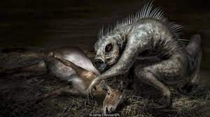

卓柏卡布拉

外觀
有目擊者表示這頭怪物身高約有兩呎，非常矮小，但擁有尖銳牙齒、紅色眼睛，可以像人類般直立行走，亦可輕易跳至六米高，行動迅速。更恐怖的是其舌頭有一根尖管，可插入心臟，吸乾動物血液為止。重約40磅（約18公斤）的狗形動物有著一雙銅藍色的眼睛，上排牙齒比下排牙齒突出許多，擁有大象般的光滑表皮，沒有毛髮，前爪3隻腳趾，尾巴兩側長著奇怪的「袋狀腺體」。
目擊
1995年卓柏卡布拉第一次在波多黎各出現，後來在多米尼加共和國、阿根廷、玻利維亞、智利、哥倫比亞、宏都拉斯、薩爾瓦多、尼加拉瓜、巴拿馬、秘魯、巴西、美國等美洲各國皆陸續有動物神秘死亡事件及目擊報告。
雖然卓柏卡布拉主要在美洲地區出沒，但在2005年的俄羅斯也有發生大量家畜被吸乾血的案例，當地一些居民稱見到了類似於卓柏卡布拉的吸血怪獸。
2000年，有報導稱，卓帕卡布拉出現在了尼加拉瓜。在馬那瓜西北方70公里處、小城馬爾佩西洛郊外。
2008年，美國德克薩斯州德威特郡警察布蘭登目擊並拍下來一隻疑似卓帕卡布拉的動物。據稱，錄像中拍到的動物身上沒有毛，有長長的鼻子，前腳短、後腿長，大小跟土狼差不多。
2009年9月，美國田納西州（Tennessee）迪克森縣（Dickson County）有目擊者聲稱獵殺一隻卓帕卡布拉。
2010年12月，美國肯塔基州一隻試圖進入民宅的怪異生物遭射殺，被懷疑可能是卓柏卡布拉。
2011年7月31日，美國明尼蘇達州道格拉斯縣大道上被發現一具神秘動物屍體，有民眾猜測這可能是卓柏卡布拉，但明尼蘇達野生動物專家凱文・科特認為這可能是獾。
2011年，美國密西西比州的特瑞特-巴納德獵殺一隻卓帕卡布拉，但當地獸醫特洛伊-巴朱爾表示，這只生物其實只是犬科動物的一種。
2012年，19歲滑雪者喬希·梅納爾（Josh Menard）在美國加州聖地牙哥太浩湖（Lake Tahoe）岸邊發現了一具約長60厘米的神秘生物屍體，喬希·梅納爾認為這可能是卓帕卡布拉，但之後被證實為是弗吉尼亞負鼠。
2013年7月，美國北卡羅萊納州捕獲到一隻卓柏卡布拉。
2013年，目擊者馬丁（Craig Martin）聲稱拍攝到了一隻卓柏卡布拉，但當地生物學家認為，它應該只是得了疥癬的土狼，並非什麼卓柏卡布拉。
2013年，委內瑞拉一名工人在森林中發現一隻身軀像人，皮膚呈現暗紫色，全身無毛、長尾、後腿短曲，雙手都有5隻長手指，頭大有一口利齒的動物屍體。而發現該屍體的工人認為這有可能就是卓柏卡布拉（chupacabras）。
2014年，美國德克薩斯州的Ohrts一家獵殺了一隻據稱是卓帕卡布拉的生物。
2014年，美國德克薩斯州一名目擊者目擊並拍攝到了「卓帕卡布拉」，但寵物研究員克勞德-格里芬認為這可能只是雜交野狗或毛髮脫落的生病郊狼。
2014年，美國德克薩斯州一對夫婦聲稱捕捉到一隻「卓柏卡布拉」幼仔，但根據後續分析，這只動物只是一隻脫毛的浣熊。
2014年，美國密西西比州一名獵人哈勒爾（Harrell）聲稱獵殺了一隻外型像狗、沒有毛髮的「卓柏卡布拉」。據哈勒爾(Harrell)稱，當時他以為該動物是浣熊或土狼，當它欲跳走時，哈勒爾立刻開槍殺死它，連其飼養的狗看見屍體時也感到害怕。另，據稱其鄰居曾指這動物殺死了3隻雞。
2015年，智利中北部利馬里省（Limari）一個小鎮裡的一名牧羊人稱在一棟舊酒廠內發現兩具奇怪動物的屍體，最初以為是死蝙蝠，但因為屍體頭部太大了，還是和蝙蝠的形體有差距，發現者後認為是卓柏卡布拉。
2015年5月31日，美國德克薩斯州男子奧利維拉（Philip Oliviera）飼養犬只於一條小溪旁咬死了一隻皮膚質感像大象、爪子像浣熊、後腿異常粗大的動物，奧利維拉(Philip Oliviera)認為這是一隻卓柏卡布拉，但哺乳動物學家Jonah Evans認為這只是一隻患上了皮膚病的狼或者浣熊。
2015年，巴拉圭南部伊泰普地區（Itapua）卡門-巴拉那鎮（Carmen del Parana）居民於一條小溪中發現了一具屍體，後當地消防隊將這具屍體打撈上來，以便於供專家檢查。消防隊負責人賈維爾·麥迪納（Javier Medina）與法醫專家巴布洛·萊米爾（Pablo Lemir）認為這可能是一隻高度腐爛的靈長類動物，但當地居民卻認為這是一隻卓柏卡布拉。
2016年，烏克蘭農夫Ivan聲稱射殺了一隻卓帕卡布拉。當地獸醫對該具屍體進行檢查後指出屍體外形像狐狸，但牙齒、頸部及耳朵等都較長，暫時無法確認其物種。而另有當地一名居民稱除了已被射殺的這只卓帕卡布拉外，另有一隻外表類似袋鼠、身體較長而前肢較短的卓帕卡布拉。
2017年，瓜地馬拉克薩爾特南戈（Quetzaltenango）附近一個村莊傳出獵殺了一隻卓帕卡布拉，不過後來鑑定，這是一隻蜜熊(Potos flavus)。